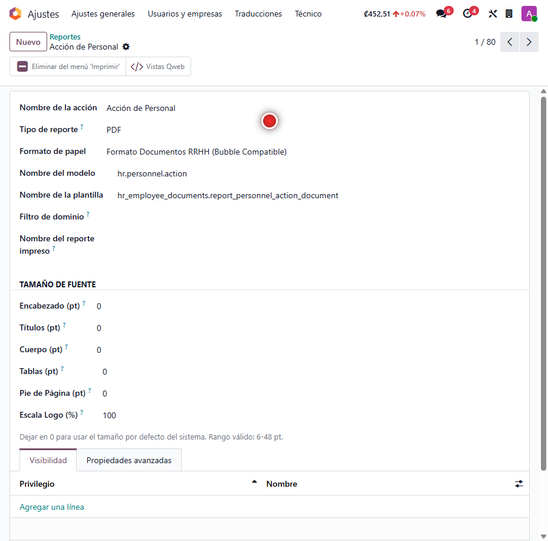
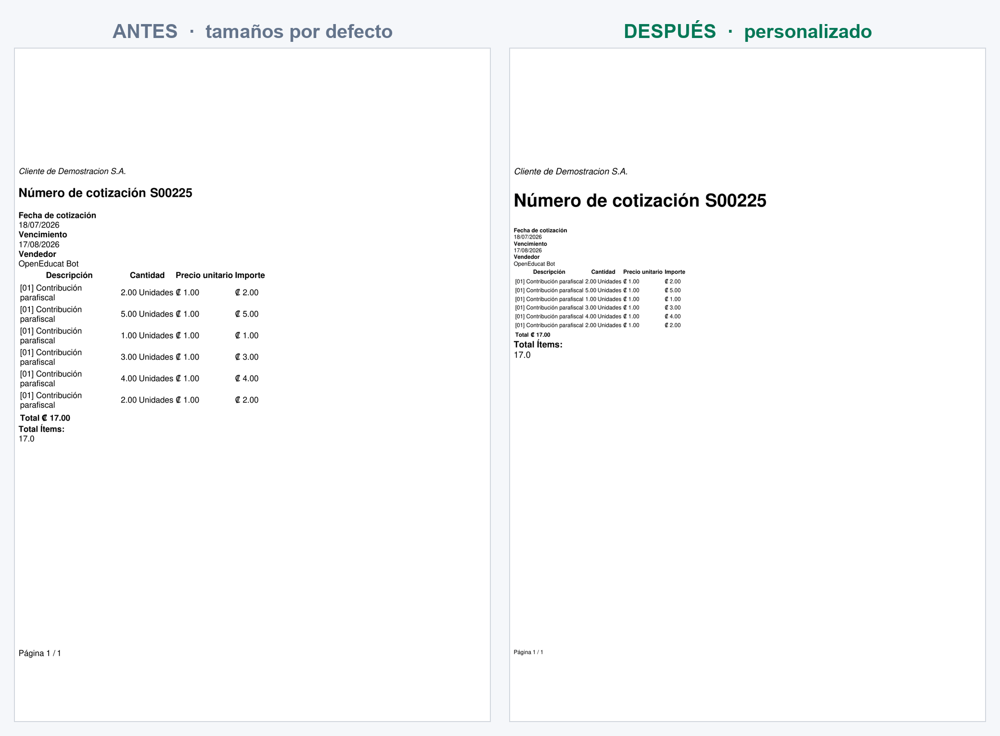
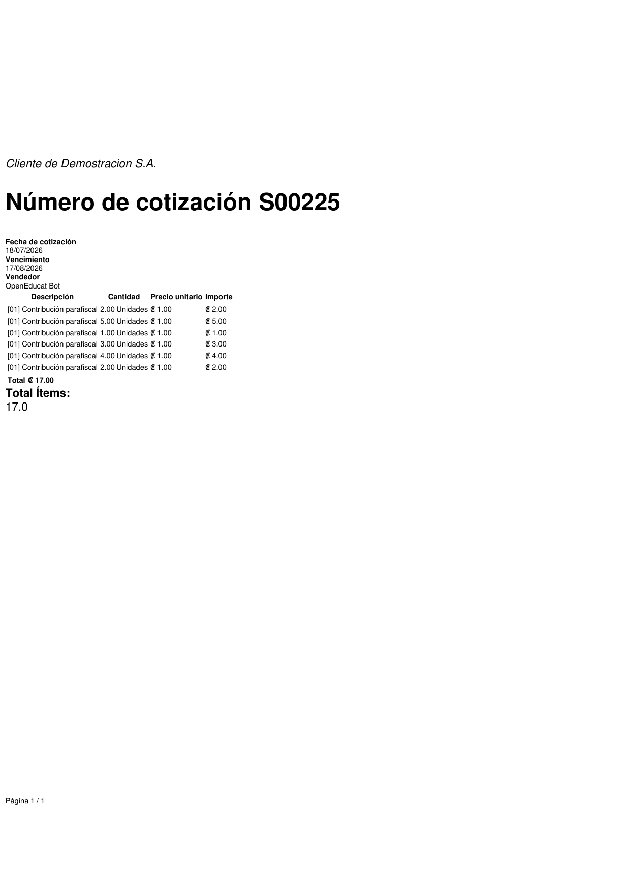

Tamaño de Fuente en Reportes
Ajustá el tamaño de letra de cada reporte de Odoo por separado —encabezado, títulos, cuerpo, tablas, pie de página y hasta la escala del logo— sin tocar plantillas ni depender de un diseñador. Ideal para que una factura extensa quepa en menos páginas o para dar más presencia a un documento oficial.
Configuración por reporte
Con el modo desarrollador activo, en Ajustes → Técnico → Reportes se abre cualquier reporte y aparece la sección "Tamaño de Fuente": seis campos para definir el tamaño de letra de cada zona del documento y la escala del logo.
Cada reporte guarda su propia configuración. Un valor 0 mantiene el tamaño por defecto del sistema, así se ajusta solo lo necesario sin afectar a los demás documentos.



El efecto en el reporte PDF
El mismo reporte, impreso con los tamaños por defecto y con una configuración personalizada. El título gana presencia mientras el cuerpo y la tabla de líneas se compactan, ideal para documentos con muchos renglones.
Los cambios se aplican en la siguiente impresión, sin reiniciar el servidor: la configuración se lee directamente del reporte al momento de generar el PDF.


Tecnología detrás de la suite
¿Tus reportes necesitan ajustarse al detalle?
Configuro el tamaño de letra de cada documento para que tus reportes salgan como los necesitás.